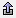

The Legend in the Main Display window lists the set of Layer Controls within that view. The Legend can be floated from the Main Display window. This is done with the  Float Window button (the Embed Window button will move the Legend back into the Main Display window).
The Legend shows each layer under the Layer Category of that display. For example, the Legend in the above image shows the categories "Maps", "Radar Displays", and "Plan Views". The Layer Category may be changed. This is useful for grouping and controlling the visibility of a group of layers.
The Legend Label shows the parameter or Field name, the display type, and sometimes other information such as the level of a plan view or value of an isosurface. The label may be changed using items under the Edit->Properties menu item. Clicking on the blue, highlighted part of the label will bring up the Layer Controls tab of the Data Explorer. Right-clicking will allow you to open the Layer Controls tab for that parameter, or access the menu options in the Layer Controls tab.
Each layer category within the Legend can be toggled to show or hide the layers under that category with the Toggle Category button. The visibility of the layers under a category (e.g., Radar Displays, Plan Views, etc.) can be changed with the Category Visibility checkbox. The visibility of an individual layer can be changed with the Layer Visibility checkbox.
The Remove button quickly removes a layer. The Visibility Toggle Lock "locks" the current visibility of the layer and does not change it while cycling visibilities.
Detailed information about a layer may also be shown in the Legend. For example, for those layers that use a color table, the color bar will also be shown in the Legend. Moving the mouse over the color bar shows intermediate values. Right-click on the color bar to open the Color Table Editor, change the range, select other color tables, etc. You can also modify the color bar interactively for each display.
If using adaptive resolution, certain layers may list out data sampling text above the colorbar, as well as an extra  Resolution Control button to the right of the blue text of the Legend Label for the layer. This button allows for turning adaptive resolution on or off for the layer, as well as changing the display to utilize full resolution (no data sampling). Note that adaptive resolution is still under development. For more information, see Adaptive Resolution.
Resolution Control button to the right of the blue text of the Legend Label for the layer. This button allows for turning adaptive resolution on or off for the layer, as well as changing the display to utilize full resolution (no data sampling). Note that adaptive resolution is still under development. For more information, see Adaptive Resolution.